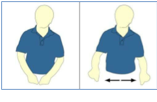

BISFed International Boccia Rules
2021 - 2024 – v.2.2
English Rules to be used at all BISFed sanctioned events
Document Version Control
Any changes made to this rulebook will be indicated below. Please refer to the version number on the title page to identify which version this is.
|
Version |
Changes Made |
By Whom |
Date |
|
1.1 |
|
GV |
October 2021 |
|
2.0 |
|
GV |
March 2022 |
|
2.1 |
|
SM & MK |
January 2023 |
|
2.2 |
|
JP |
February 2024 |
==========================================================================
Scope and Application
These BISFed (Boccia International Sport Federation) International Boccia Rules define how the sport of Boccia should be played. These rules apply to all World Boccia sanctioned tournaments. A World Boccia sanctioned tournament is an event recognised as part of the BISFed Competition System. In addition to these International Boccia Rules, a sanctioned competition must apply the following BISFed rules:
· BISFed Classification Rules
· BISFed Anti-Doping Rules
· BISFed Competition & Ranking Rules
Please consult these regulations alongside the rules presented in this document to understand what is required when competing in a World Boccia sanctioned tournament. BISFed and a host organising committee may publish rule clarifications in the Technical Guide for a tournament in agreement with the BISFed Technical Delegate for the tournament. A rule clarification must only describe a specific application of a rule for that tournament and must not amend the meaning of a rule.
BISFed recognises that situations may arise that have not been covered by the rules defined in this document. Any circumstances that require a change to the rules before a tournament has started must be raised prior to the start of the Tournament and confirmed at the Technical Meeting by the Head Referee and Technical Delegate to all competitors. Any circumstance that requires a decision to be made during a tournament will be made in consultation with the Head Referee and Technical Delegate who will have the final decision. These circumstances must be reported to BISFed immediately.
The BISFed International Boccia Rules may be adapted by BISFed Member Nations for national level tournaments or any other competition that is not part of the BISFed Competition System.
Spirit of the Game
The ethics and spirit of the Game are similar to those of tennis. Crowd participation is welcomed and encouraged. However, spectators, including Team members not in competition, are encouraged to remain quiet during the action of an Athlete propelling the ball. Spectators may be asked to leave for unacceptable behaviour.
Translations
An editable version of the rules is available for Members wishing to translate the rules into other languages. Email admin@bisfed.com if you would like to receive this document. BISFed will endeavour to publish translated documents however, for the avoidance of doubt, the English version is the OFFICIAL copy for all dispute resolutions.
Photography
No flash photography is allowed. Video filming of matches is permitted. However, tripods and cameras on the FOP may only be placed with approval from the HR or TD.
Table of Contents
THE BASICS
PRE-GAME PREPARATION
ON COURT
9. Roles and Responsibilities 14
11. Preparation for subsequent Ends 21
VIOLATIONS and DISPUTES
16. Clarification and Dispute Procedure 27
COMMUNICATION
17.11. Officials´ gestures / signs 28
TIME OUTS
THE BASICS
1. Definitions
|
Classification |
Designation of Athletes in accordance with BISFed Classification Rules. |
|
Division |
One of several levels of competition dependent on classification. |
|
HOC |
Host Organising Committee. |
|
HR, AHR, TD, ATD |
Head Referee, Assistant Head Referee, Technical Delegate, Assistant Technical Delegate. |
|
Coaching Assistant |
(CA) An individual that assists with coaching. CA must sit beside the score table. |
|
Side |
In individual Division, a Side is one (1) single Athlete. In Pair Division, a Side is two (2) Athletes. In Team Division a Side is three (3) Athletes. SAs, ROs, Coaches and CAs, are additional members of the Side. |
|
Sport Assistant |
(SA) Assistant for BC1 Athletes or BC4 foot players in accordance with the SA Rules. |
|
Ramp Operator |
(RO) Assists BC3 Athletes in accordance with the RO rules. Recognised by the IPC as an Athlete. |
|
Ball |
One of the red or blue balls or the Jack (ref 4.7). |
|
Jack |
The white target ball. |
|
Competition Balls |
Balls from a Licensed ball manufacturer provided by the HOC for use during the Tournament. |
|
Propel |
Is the term used for launching a ball onto the playing area. It includes throwing, kicking or releasing a ball when using an assistive device. |
|
Ball Not Played |
(BNP) Those balls that a Side does not play during an End. BNP become “Dead Balls”. |
|
Dead Ball |
A coloured ball propelled or knocked out of bounds; a ball removed by aReferee following a violation; or a ball not played due to time expiring, or because the Athlete elects not to play. |
|
Penalty Ball |
A ball played at the conclusion of an End as awarded by the Referee to penalise the other Side for a specified Violation. |
|
Two-way swing |
clearly moving the ramp at least 20cm to the left and 20cm to the right. |
|
Out of the Way |
All belongings to be in the back portion of the throwing box. RO MUST move their own equipment so it does not interfere with the opponent, nor get damaged by the opponent moving it. Athlete to be behind his/her own throwing box. |
|
Preparation of a shot |
For BC3 athletes: Everything up to the moment that the ball is released. For other classes: everything up to the moment that an athlete starts playing the shot. |
|
Playing a shot |
BC1, BC2 and BC4 only: Everything an athlete does from the moment that the ball is in the hand(s), foot or placed in position to play, until the ball is released. |
|
When the ball is released |
The moment that the ball is being put in motion, either by releasing it from the hand/foot, moving it with a pointer or kicking it. |
|
Equipment |
Wheelchairs, ramps, gloves, splints, pointers, and any other assistive devices. |
|
Wheelchair |
Wheelchair, scooter, cot… An Athlete MUST use a wheelchair to compete. |
|
Roll Test Device |
A Standard BISFed Test Ramp used to check that balls do roll. |
|
Ball Template |
A Standard BISFed Template with two specific holes used to confirm the balls’ circumference. |
|
Weigh Scale |
A scale within an accuracy of 0.01g - used to weigh the balls. |
|
Warm up Area |
A designated area for Athletes to warm up prior to entering the Call Room. |
|
Call Room |
The place to register prior to each match. |
|
Field of Play |
(FOP) The area that contains all the courts. This includes the Timers’ stations. |
|
Court |
The area enclosed by the boundary lines. This includes the throwing boxes. |
|
Playing Area |
The Court minus the throwing boxes. |
|
Throwing Box |
One of six marked and numbered boxes from which Athletes play. |
|
Throwing Line |
The line on the court from behind which the Athletes propel the ball. |
|
V Line |
The Vee across the court that the Jack must cross completely to be in play. |
|
Cross |
The mark at the centre of the playing area. |
|
Target Box |
35cm x 35cm target at the cross for penalty balls. |
|
Tournament |
The entire Competition or Competitions including equipment checks. The Closing Ceremony ends the Tournament. A Tournament may contain more than one Competition. |
|
Competition |
All Individual matches are one Competition. All Team and Pair matches are one Competition. |
|
Match |
One game between two Sides. |
|
End |
One section of a match when all balls have been played by two Sides. |
|
Disrupted End |
When balls are moved outside the normal order of play. |
|
A disrupted End that has been disturbed too much for the balls to be repositioned, or the score prior to the disruption is not known so the End must be restarted. |
|
|
Violation |
An action made by an Athlete, Sport Assistant, Ramp Operator,Side, Coaching Assistant, or Coach that is against the rules of the game and earns a penalty. |
|
Yellow Card |
A yellow card of around 7cm x 10cm and shown by the Referee to issue a warning. |
|
Red Card |
A red card of around 7cm x 10cm and shown by the Referee to issue a disqualification. |
2. Event Types
There are three types of events in the BISFed Competition System:
2.1 Individual
There are eight individual events with a male and female event for each recognised classification (BC1, BC2, BC3, and BC4). Athletes must be classified in the corresponding sport class to compete.
In the Individual events, a match consists of four (4) ends. Each athlete initiates two ends with control of the Jack alternating between athletes. Each athlete has six (6) coloured balls and must enter the call room with no more than 6 red and 6 blue balls, plus 1 jack ball. The Side playing red balls will occupy throwing box 3, and the Side playing blue balls will occupy throwing box 4.
BC1 athletes and BC4 foot players have a Sport Assistant to help them on court. BC3 athletes have a Ramp Operator to assist them. Also, one Coach or one Coaching Assistant (CA) may accompany each side in all divisions to the Court. The coach/coaching assistant must sit in the designated area at the end of the court.
2.2 Pairs
There are two pair events, BC3 Pair and BC4 Pair. Athletes must be classified in the corresponding sport class to compete. Each Pair must have one male and one female athlete.
In the BC3 and BC4 Pair events a match consists of four (4) Ends. Each athlete initiates one End with the control of the Jack passing in numerical order from throwing box 2 to 5. Athletes play with three (3) coloured balls each and must enter the call room with no more than 3 red and 3 blue balls, plus 1 jack ball for each pair. The Side playing red balls will occupy throwing boxes 2 and 4, and the Side playing blue balls will occupy throwing boxes 3 and 5.
In the BC3 Pair each athlete is assisted by a Ramp Operator who must abide by the Ramp Operator Rules. One Coach or one Coaching Assistant may accompany each Pair to the Court. During the End the coach/coaching assistant must sit in the designated area at the end of the court.
A substitute for each pair will only be allowed at specified youth international events.
2.3 Team
There is one team event, for the BC1 and BC2 classes. Athletes must be classified as BC1 or BC2 athletes. A Team must play the match with three athletes and must have, at least, one male athlete, one female athlete, and one BC1 athlete.
In the Team event a match consists of six (6) Ends. Each athlete initiates one End with the control of the Jack passing in numerical order from throwing box 1 to 6. Athletes have two (2) coloured balls each and must enter the call room with no more than 2 red and 2 blue balls per athlete, plus 1 jack ball for each team. The Side playing red balls will occupy throwing boxes 1, 3 & 5 and the Side playing blue balls will occupy throwing boxes 2, 4 & 6.
Each Team is allowed one Sport Assistant. One Coach or one Coaching Assistant may accompany each Team to the Court. During the end the coach/coaching assistant must sit in the designated area at the end of the court.
Substitutes for each team will only be allowed at specified youth international events.
3. Tournament Setup
3.1 THE COURT
The surface should be flat and smooth (e.g., polished concrete, wooden, natural or synthetic rubber.) The surface should be clean. Nothing may be used to interfere with the playing surface (for example, powders of any kind).
The Court dimensions are 12.5m x 6m with the throwing area divided into six throwing boxes. All measurements of the boundary lines are measured to the inside of the relevant line. Lines dividing the throwing boxes and the lines for the cross are measured to a thin pencil line with the tape evenly spread over either side of that mark. The throwing line and the V line will be placed inside the non-valid area for Jack (ref.: Boccia Court Layout at the back of this rulebook).
All court markings should be between 1.9cm & 7cm wide and must be easily discernible. Adhesive tape may be used to mark lines. Wide tape, 4cm – 7cm wide, will be used for: external boundary lines, throwing line, and the V line. Narrow tape, 1.9 to 2.6cm wide, should be used for: the lines dividing throwing boxes, the target box, and the cross. The inside dimension of the target box is 35cm x 35cm. Narrow tape is to be placed on the outside of the 35cm square target box.
3.2 THE SCOREBOARD
The scoreboard is to be placed in a position where all Athletes competing in the match can clearly see it.
3.3 TIMING EQUIPMENT
Timing equipment should be electronic.
3.4 RED/BLUE COLOUR INDICATOR
The indicator is a coloured paddle used by the Referee to show which Side (red or blue) goes next. The Referee uses the indicator and his or her fingers to show the score at the end of each End and at the end of the match.
3.5 MEASURING DEVICES
Ball templates are used to confirm the circumference range of a boccia ball. Devices including tape measures, callipers, feeler gauges, flashlight are used by the Referees to measure distances on court.
4 Equipment Check
All testing devices required to conduct a tournament must be approved by the BISFed Technical Delegate and/or Head Referee of each sanctioned event.
An equipment check must take place at the start of a tournament for the following items of equipment:
· Wheelchairs
· Ramps
· Pointers
· Gloves
· Splints
· Communication Devices
The Head Referee and/or their designate will conduct the checks at a time determined by the Technical Delegate. This should take place before competition begins. Checked and approved equipment will receive an official stamp or sticker for each item including a sticker for every section of the ramp. Gloves, splints or other similar devices that the Athlete uses on court need documented approval from a Classifier which must be brought to Equipment Check and to the Call Room. Athletes using communication devices on the FOP must have these devices approved at Equipment Check and must receive the official stamp/sticker. A communication device will only be approved if it is essential to enable the athlete to communicate with the referee, to instruct their assistant within the permitted rules, for communication on court, or if required for the movement of their wheelchair.
Requests to certify any items after the equipment checks will not be permitted.
Equipment is subject to random checks at any time during a tournament at the sole discretion of the Referee on court or the Head Referee. If equipment used on court is found to be out of compliance a yellow card will be given to the Athlete. (ref: 15.9.8). The side may then use a technical time-out to fix or replace the equipment according to rule 19.1. If the athlete is not able to fix or replace the equipment within the time available, the equipment cannot be used anymore in that match. If an Athlete's equipment (wheelchair, ramp, gloves, splints and other aids) fails the criteria on a second occasion on a random check, that Athlete receives a second yellow card and will forfeit the current match.
4.1 ASSISTIVE DEVICES
Assistive Devices, such as ramps and pointers used by Athletes in the BC3 Division are subject to approval at the Equipment Check of each tournament. Gloves and/or splints used by any Athlete, on their throwing hand, must have documented approval from Classification that must be brought to the Equipment Check and the Call Room.
4.1.1 A ramp when laid on its side must fit into an area measuring 2.5m x 1m. This area is three dimensional; no part of the ramp is allowed to hang over the inside of any line. Ramps must have the base and all extensions extended to the maximum during the measurement. This includes any device that holds the ball in place beyond the extent of the ramp. It MUST be impossible for the ramp to extend beyond the maximum limit, otherwise it is illegal. Marks or lines to indicate the maximum allowable extension of any portion of the ramp or ball holder are NOT allowed.
4.1.2 To prevent damage, only the Ramp Operator or the Coach should handle the ramp during equipment checks. Once approved at the Equipment Check, the Referee will apply the validation stamp or sticker supplied by the HOC for the Competition to all approved equipment.
4.1.3 A ramp may not contain any mechanical device that would aid propulsion, speed up or slow down the ball or aid the orientation of the ramp (e.g., lasers, levels, brakes, sighting devices, scopes, etc.). Such mechanical devices are not permitted in the Call Room or on the Field Of Play. Once the Athlete releases the ball, nothing should obstruct the ball in any way. A raised top is not allowed. A fixed or temporary accessory attachment on the ramp may not be used for sighting/aiming/orienting the ramp. This includes hoops, rings, and holders. Any side rail or other protrusion must not exceed the height (diameter) of the ball. The end/top rail must not exceed the height of the side rails.
4.1.4 When propelling a ball, the ramp may not overhang any portion of the throwing line. (Imagine the line as a solid wall that may not be touched or penetrated.)
4.1.5 There is no restriction on the length of the pointer used by the Athlete to release the ball from the ramp. The pointer must be in direct contact with the Athlete. (head, mouth, arm, leg, etc.). Pointers must have direct contact with the ball and the Athlete only when releasing the ball. A pointer is NOT allowed to be attached to the wheelchair during the release. (ref.: 15.5.4.) The release of the ball must be caused by the action of the Athlete using the pointer. It is acceptable for an athlete to move his/her own wheelchair, entirely by him/herself while in contact with the ball to release the ball. Lifting or lowering a gate is not legal. Strings, ribbons, cloth strips, etc., are not pointers. Approved pointers will receive validation stickers.
4.1.6 After the Referee presents the Jack, and before propelling the Jack, the Athlete propelling must clearly swing their ramp at least 20 cm to the left and 20 cm to the right – hereinafter referred to as “the two-way swing” (ref.: 15.5.9). (This ensures that the Ramp Operator cannot assist in lining up the first shot, while the Referee is otherwise occupied.) The ramp must NOT have any marks or any device to indicate the starting position of the ramp for the two-way swing. (e.g. A graduated collar on the column is NOT allowed.)
For tie-break Ends, in both Individual and Pair play, each Athlete must make the two-way swing prior to propelling their first ball (for Pairs, this is a simultaneous swing), but only after the Referee indicates it is their turn (ref: 13.5). The ramp must also undergo the two-way swing before propelling any penalty ball.
Athletes that have balls remaining must reorient the ramp before releasing their ball by making the two-way swing when they or their teammate returns from the playing area (for Pairs, this is a simultaneous swing - both Athletes MUST swing their ramp prior to the release of the ball). If the Athlete has no balls remaining, he/she does not need to make this swing (ref.: 15.5.10).
It is not required to swing the ramp between the other plays.
4.1.7 An Athlete may use more than one pointer during a match. All assistive devices must remain in the athlete's throwing box for the entire End or be securely placed on the athlete’s wheelchair. If the Athlete wishes to use any items (bottles, coats, pins, flags…) or other equipment (pointer, ramp or ramp extension…) during an End, these items must be on the floor inside the Athlete’s throwing box or securely placed on the athlete’s wheelchair at the beginning of that End. If an item is taken out of the Athlete’s throwing box during the End, the Referee will judge according to rule 15.7.1, 15.7.4.
4.1.8 If a player’s equipment breaks during a match, the Referee will stop the clock and the relevant side will be given a ten (10) minute technical time-out to repair the equipment. In a Pairs match, an Athlete may share a ramp with his/her teammate if necessary. A replacement ramp or wheelchair may be substituted between Ends only, providing the replacement bears the validation stamp/sticker for the competition. The Head Referee must be notified of any such replacement. Replacements may come from outside the FOP (ref 4.2.2; 19.) A side may have only one technical time-out per match.
4.1.9 Athletes that require the assistance of gloves or splints on their throwing hand, or the use of any other such aids must have documented approval for the use of those items from Classification. The Classification document is valid for the duration stated on the document. (Classification can be permanent, or temporary)
4.2 WHEELCHAIRS
4.2.1 Competitors must be seated in a wheelchair to compete. Scooters or cots/beds (with documented approval from Classification) may also be used. There is no restriction on seat height for BC3 Athletes, so long as they remain seated when releasing a ball. For all other Athletes the maximum seat height is 66 cm from the floor to the lowest point of where the Athlete's buttock is in contact with the seat cushion. (ref.: 15.7.3)
4.2.2 If a wheelchair breaks during the match, time must be stopped and the side will be given one ten (10) minute technical time out per match for repairs. If the wheelchair cannot be repaired the Athlete may replace the broken wheelchair with another approved wheelchair between ends, or must carry on playing with the broken wheelchair. Any balls the athlete cannot play become dead balls.
4.2.3 In case of a dispute involving a wheelchair the Head Referee in conjunction with the Technical Delegate shall decide the ruling. Their decision is final.
4.3 Adaptations to wheelchairs.
4.3.1 Athletes are permitted to use postural supports on their competition wheelchair for the purpose of supporting stabilisation of the body. These supports may include pelvic straps, chest straps or harnesses, ankle straps, pommels, leg/foot straps, thoracic supports. This type of support must be reviewed, approved and documented during the Classification process.
4.3.2 Any additional device added to the Athlete’s sport specific wheelchair will be reviewed by both Referees and Classifiers. NO additional device may be added to the sport wheelchair that will provide additional stability, or control or direct the Upper Limb/Lower Limb (UL/LL) when propelling the ball.
4.3.3 A Referee or Classifier has the authority to ask the Athlete to remove any added undocumented device, that is deemed to give the Athlete an unfair advantage when propelling the ball into the playing area (e.g., an external guide that assists the direction of a throw/kick/release).
5. BOCCIA BALLS
In BISFed sanctioned competitions, each athlete or side may use their own set of boccia balls. A set of boccia balls consists of six red balls, six blue balls and one white jack ball. Only one full set per side is permitted in the call room. In the individual divisions each athlete may use their own jack. In Team and Pair divisions, each side must use only one jack. If an athlete or side does not bring their own balls to the Call Room, then competition balls will be provided to them.
To be considered legal, a boccia ball must meet the following criteria:
5.1 Construction
From 1st January 2023, a ball must be from a licensed manufacturer. The ball must be marked with the official manufacturer logo and the official BISFed licensed logo.
A ball that was not awarded a licence by 1st January each year must only be released for sale by a manufacturer from the close of the last Major or Qualification tier event (see section 1.3 in Competition & Ranking Manual) in that calendar year.
A ball must weigh 275 g. +/- 12 g and the circumference must be 270 mm +/- 8mm.
The balls must have a defined colour of red, blue, or white and each colour must fall within the BISFed acceptable colour range provided to manufacturers.
A ball must be spherical and constructed from panels that are uniformly sized. All panels must be uniformly sewn together to define the spherical shape. All panels must be the same type of material.
A ball must be constructed from materials with low elongation and stretch characteristics including vinyl, polyurethane fabric, leather, synthetic leather, suede, or other similar material.
A ball must be filled with uniformly sized pellets or beads made of polyethylene or other similar plastic, or natural inert materials. Materials must be non-conductive, non-metallic, and non-magnetic.
5.2 Condition
A ball must be in good condition. In good condition means fit for intended purpose, of satisfactory quality, not damaged and capable of any agreed standard of performance. The manufacturer logo and BISFed logo must both be visible and identifiable.
A ball must not be tampered with and will be considered to have been tampered with if it differs from the original ball submitted by the licensed manufacturer, except where a difference can be accounted for due to normal wear and tear or acceptable preparation for play. Anything that changes the property of the surface or filling of the ball that can be seen or felt will be deemed to be tampering.
Normal wear is the expected decline in condition from typical use of a ball, such as repeatedly being propelled onto court. For example, there may be a pattern of wear due to the throwing style or grip used by an athlete, or where a ball interacts with a consistent point of a ramp or pointer such as a circular pattern on a ball in line with the arrow/marker.
Acceptable preparation for play is the permitted maintenance of a ball so that it remains in a good condition, such as maintaining the weight and desired softness of a ball. For example, the ball may be softened, or the same pellets or beads as were originally used in the ball may be replaced to maintain the weight.
The surface of the ball must not have any visible punctures or cuts. The ball must not have any holes at the corners (vertex) of the panels when compared to an original ball or more than two areas of delamination. Delamination means that part of the panel is splitting apart into layers. Any single area of delamination must be less than 1 cm in length. The total length of all areas of delamination must not exceed 2 cm.
The surface of the ball must be free of stickers, decals, or transfers. A ball may be marked with a pen or marker for the purpose of identifying the ball (e.g., numbers or letters) and/or for the purpose of identifying how the ball should be used (e.g., a dot or arrow). The original colour of the panel must be identifiable around any mark added to the panel. There must not be any markings on or across a seam, so that the seam can still be seen and inspected. There must not be any markings over the approved manufacturer or approved BISFed logo.
The surface of the ball must not have any substances applied to it. The surface of the ball must not have any abrasions applied to it that do not come from the normal use of a ball. There must not be any visible scuff marks or any areas of rubbing, sanding, or scraping that result in significant differences in the texture of the ball. There must not be any abrasions along the length of one or more seams.
The ball must not have ripped or missing threads and no more than two stitches that have been re-sewn. The stitching must be the same as the original manufacturer stitching and must be consistent across the entirety of the ball.
5.3 Confiscated Balls
If a ball fails a pre-match or post-match ball check, the ball will be confiscated. Once a ball is confiscated, after checking with the HR/AHR, the IR will then confirm if there's a suspicion of the ball being tampered or not. Only if the suspicion exists, a three-person panel will review the confiscated ball. The panel must be made up of at least two of either the Head Referee, Assistant Head Referee, Technical Delegate, or Assistant Technical Delegate. The third member can be an International Referee who was not involved in the initial decision. This panel will be formed immediately after the decision to confiscate a ball is made. If the initial decision to confiscate the ball is made in the call room, the panel must review the ball whilst the match is being played and reach a decision by the completion of the match. If the initial decision to confiscate the ball is made at the end of the match, the panel must review the ball before the result of the match is confirmed.
The panel will review the initial decision to confiscate the ball and complete further tests to determine whether a ball has been tampered with or is only a ‘failed ball’. The panel will assess the ball and review the initial decision by repeating the pre-match testing procedures. The panel may use two additional tests to assess whether the ball has been tampered with:
- Needle/Probe Test
- Friction Test
If, after the panel have reviewed a ball, it is decided it has not been tampered with, then the ball will be held until the end of the tournament and then returned to the athlete.
If, after the panel have reviewed a ball, it is decided it has been tampered with, then the panel will award a red card and the athlete will be disqualified from the tournament. The athlete will also be reported under the BISFed Code of Ethics to a BISFed Ethics Commission. The tampered ball(s) will be retained by BISFed as evidence for the BISFed Ethics Commission. Please refer to the BISFed Code of Ethics for more information on the process of the Ethics Commission.
PRE-GAME PREPARATION
6. Warm Up
6.1 Prior to the start of each match Athletes will be allocated a time period to warm up in the designated Warm Up Area. During scheduled competition time, the Warm Up Area may only be used by the competitors who will compete in the next scheduled match. Athletes and Athlete supporters (Coach/CA, SA, RO) may only enter the Warm Up Area and proceed to their designated warm up court within their scheduled time. (Ref 15.9.1)
6.1.1 Warm Up time frame: for individual matches, the Warm Up Area will open 90 minutes before the scheduled start time of the match and will close 5 minutes before the Call Room opens for the match. For teams & pairs matches, the Warm Up Area will open 105 minutes before the scheduled start time of the match and will close 5 minutes before the Call Room opens for the match. When the Call Room closes for the last matches of the day, Athletes who did not play during the day may use the Warm Up Area to train for 60 minutes. The TD may adjust this time frame to allow reasonable access to the Warm Up Area and to accommodate the competition schedule. Participants will be informed of any changes to the normal schedule.
6.2 Athletes may be accompanied into the Warm Up Area by a maximum number of people as follows: (Ref 15.9.1)
· BC1: 1 Coach (or 1 Coaching Assistant), plus 1 Sport Assistant
· BC2: 1 Coach (or 1 Coaching Assistant), plus 1 Sport Assistant
· BC3: 1 Coach (or 1 Coaching Assistant), plus 1 Ramp Operator
· BC4: 1 Coach (or 1 Coaching Assistant), plus 1 Sport Assistant
· Pair BC3: 1 Coach (or 1 Coaching Assistant), plus 1 Ramp Operator per Athlete
· Pair BC4: 1 Coach (or 1 Coaching Assistant), plus 1 Sport Assistant
· Team (BC1/2): 1 Coach (or 1 Coaching Assistant), plus 1 Sport Assistant
6.3 If necessary, one translator and one physiotherapist/massage therapist per country may enter the Warm Up Area. These individuals may not assist with coaching.
7. Call Room
7.1 An official time clock will be situated prominently at the entrance of the Call Room.
7.2 Athletes may be accompanied into the Call Room by a maximum number of people as follows:
· BC1: 1 Coach (or 1 Coaching Assistant), plus 1 Sport Assistant
· BC2: 1 Coach, (or 1 Coaching Assistant)
· BC3: 1 Coach (or 1 Coaching Assistant), plus 1 Ramp Operator
· BC4: 1 Coach (or 1 Coaching Assistant) (plus 1 Sport Assistant if Athlete is a foot player)
· Pair BC3: 1 Coach (or 1 Coaching Assistant), plus 1 Ramp Operator per Athlete
· Pair BC4: 1 Coach (or 1 Coaching Assistant) (plus 1 Sport Assistant if Athlete is a foot player)
· Team (BC1/2): 1 Coach (or 1 Coaching Assistant), plus 1 Sport Assistant
7.3 Prior to entering the Call Room, each Athlete, each Sport Assistant, each Ramp Operator must show their competitor bib numbers and their accreditation tag. Coaches (or Coaching Assistants) must show their accreditation. The Competitor’s number must be clearly visible from the front and may be fixed to the competitor or the wheelchair. ROs must wear the bib number that corresponds to the Athlete they are assisting, clearly visible on their back. All other SAs must have the bib number on their chest. In Team Division, the SA may wear the bib number of any of the BC1 Athletes in that match. Failure to comply with this requirement will result in entry being refused to the Call Room.
7.4 Registration for all matches is done at the Call Room desk, which is at the entrance to the Call Room. A Side that is not present in the Call Room on time will forfeit the match.
7.4.1 For Individual Division, all Athletes must be registered between thirty (30) and fifteen (15) minutes before the scheduled start time of a match in which they are scheduled to participate.
7.4.2 For Team and Pair Division, all Athletes must be registered between forty-five (45) and twenty (20) minutes before the scheduled start time of a match in which they are due to participate.
7.4.3 Each Side (Individual, Team or Pair, including any SA/RO and the Coach/CA) must register together and must bring all their equipment and balls with them. Each Side should bring to the Call Room only the items necessary to compete.
7.5 Once registered and inside the Call Room, Athletes, Coaches/CA and SA/RO may not leave the Call Room. Should they do so, they will not be allowed to re-enter and will not take further part in the current match (rule 7.12 is an exception.) Any other exceptions will be considered by the Head Referee and/or the Technical Delegate.
7.6 All Sides must remain in the Call Room in their designated court area immediately after they have registered. If an Athlete needs to play back-to-back games, the Coach/CA or Team Manager may, with the TD's permission, register the Athlete for the following game. This includes playoff games when the Athlete's progression to the next level does not leave enough time to comply with Call Room time constraints.
7.7 At the appointed time the Call Room doors will be closed and no other person or equipment or balls may enter or take part in the match (exceptions may be considered by the Head Referee or designate).
7.8 Referees for each match will enter the Call Room to prepare for the match at the latest when the Call Room door closes.
7.9 Athletes may be asked to show their competitor numbers, accreditation tag, and Classification documentation to the Referee.
7.10 All equipment will be checked in the Call Room to verify that the equipment has been awarded an official sticker for use during the tournament. Any equipment that fails a check cannot be used on court, and earns a yellow card.
7.11 Coin toss - the coin toss will be conducted in the Call Room. The Referee will flip a coin and the winning Side chooses whether to play red or blue. Sides are permitted to gently examine (with care and the Referee’s oversight) an opposing Side’s Boccia balls, after the coin toss.
7.12 If there is a schedule delay while the Call Room is in operation, the Head Referee or designate, can agree to a request to use the toilet under the following guidelines:
· the other Side of that match must be informed;
· an administrative member must accompany that Athlete;
· the Athlete must return to the Call Room within ten (10) minutes; failure to return in time results in forfeit of the match.
7.13 Rule 7.4 will not apply if the Host Organization causes a delay. If matches are delayed, the HOC will notify all Team Managers as soon as possible in writing and the TD will revise the schedule.
7.14 Translators may only enter the Call Room or the FOP, if asked to do so by a Referee. The translator must be present in the designated area in order to be eligible to enter the Call Room or FOP.
8. Pre-Match Ball Check
Each athlete or side must present their balls in the Call Room to be tested before every match. The tests will confirm that each ball meets the criteria that define the construction and condition of a legal boccia ball.
After the coin toss there will be testing for each of the seven (7) balls each side will use during play (e.g., jack ball plus six coloured balls) for every court. The tests that will be completed in the call room are:
- Roll Test
- Ball Inspection
- Circumference Test
- Weight Test
- Metal Detection Test
The procedure for these tests can be found in the Referee’s Procedure Manual.
If one or more balls fail one or more of these tests, the failed ball will be confiscated from the athlete and the athlete will receive a yellow card. A failed red or blue ball will not be replaced. A failed jack ball will be replaced by an equivalent competition jack ball selected by the referee.
The athlete or side will play with any remaining balls that have passed all the call room tests. If one Athlete has more than one ball rejected during the same check, the offence will incur only one yellow card; but the Athlete will play with one less ball for each ball that is confiscated.
If an Athlete's ball(s) fails the criteria during the ball check for a subsequent match, that Athlete receives a second yellow card and will forfeit the match under rules 15.10.2 and 15.10.3.
Athletes, SAs/ROs and Coaches/Coaching Assistants may observe the ball check. If a ball fails, the test is not reattempted, unless the referee did not follow the correct test procedure.
For Team and Pair Division Athletes must identify each Athlete’s equipment and balls in the Call Room so that if an item fails a check, it can be correctly associated with the correct Athlete. If ownership is not admitted, the captain plays with the lesser number of ball(s) (ref.: 15.9.2).
Once the call room check has been completed, the referee will retain the balls until both sides arrive on court and distribute them after all bags are stored at the score table.
ON COURT
9 Roles & Responsibilities
9.1 Athlete
The athlete is the individual that is in control of releasing the ball. He/she must propel the ball unassisted, without any contact from anyone during the release of the ball.
9.1.1 The Captain's Responsibility
9.1.1.1 In Team and Pair Division, each Side is led by a captain for each match. A letter “C”, clearly visible to the Referee, must clearly identify the captain to the Referee. Each captain, club or country is responsible for providing the “C”. The captain will act as the executive of the Team/Pair and assume the following responsibilities:
9.1.1.2 Representing the Team/Pair at the coin toss and deciding whether to play red or blue balls.
9.1.1.3 Deciding which Team/Pair member should play during the match, including any penalty balls.
9.1.1.4 Calling a technical or medical time out. The Coach, SA, RO, or CA may also call a technical or medical time out.
9.1.1.5 Acknowledging the Referee's decision in the process of scoring.
9.1.1.6 Consulting with the Referee in the situation of a disrupted End or where there is a dispute.
9.1.1.7 Signing the score sheet or nominating someone to sign on their behalf. The person signing must sign his or her own name. When using the electronic score sheet, the Athlete may confirm agreement by clicking “OK” him/herself or give consent to the Scorekeeper or Referee to click “OK” on his/her behalf.
9.1.1.8 Resolving a dispute. As outlined in Rule 16.1, the captain/athlete is the one that must ask for clarification. The Coach, CA or SA/RO may also speak to the referee, with referee permission, during the dispute. If translation is necessary a translator may also attend as per Rule 17.8 and 17.9
9.2 Athlete Assistants
9.2.1 Ramp Operator
A Ramp Operator is a recognised Athlete and must conform to the rules applied to Athletes except as it applies to Classification. In this Rule Book, Ramp Operators must follow the rules assigned to Ramp Operators. When “Athlete” is mentioned in this Rule book, it refers to the individual(s) propelling the ball. The Ramp Operator must abide by the BISFed Policy on the Nationality of Competitors. A RO may assist only one Athlete. The RO must be the same individual for the entire competition; unless the RO becomes ill. If ill, the RO may be substituted. For a substitution to be allowed, a medical document confirming the illness must be provided to the HR and the Competition Information desk must be notified prior to the opening of the warm up courts for the match in question. The opponent must be notified of a substitution immediately when the warm up courts become available. Any RO substitute must have a BC3 RO license and must have completed the anti-doping training.
Ramp Operators assist BC3 Athletes by operating the ramp as directed by the Athlete. Ramp Operators must be positioned inside their Athletes’ throwing box and may not look into the playing area during the Ends. Ramp Operators perform tasks such as:
· Positioning the ramp – when directed to do so -- by the Athlete;
· Adjusting or stabilising the Athlete’s chair – when directed to do so -- by the Athlete;
· Adjusting the Athlete’s position – when directed to do so -- by the Athlete;
· Rolling and /or passing a ball to the Athlete – when directed to do so -- by the Athlete;
· Performing routine actions before or after releasing the ball;
· Picking up balls after each End – after the Referee picks up the Jack or penalty ball and says, “one minute!”
· Relaying conversations between Athlete and Referee – with Referee approval
When the ball is being released, the Ramp Operator (ref.:15.5.5)
- must not have direct physical contact with the Athlete (no touching the Athlete whatsoever)
- must not help the Athlete by pushing or adjusting the wheelchair;
- must not be touching the pointer.(ref.:15.5.6)
A Ramp Operator may not look into the playing area during the progress of an End (ref.:15.6.2).
9.2.2 Sport Assistant
BC1 Athletes and BC4 foot players are allowed to have a Sport Assistant. BC1 and BC4 foot players’ Sport Assistant should be positioned behind the Athlete’s own throwing box and may enter the throwing box when directed by their Athlete. Sport Assistants perform the same tasks as a Ramp Operator with the exception of positioning a ramp.
When the athlete starts playing the shot, the Sport Assistant is not allowed to have direct physical contact with the Athlete (no touching the Athlete whatsoever ref.:15.5.5); and is not allowed to help the Athlete by pushing or adjusting the wheelchair.
9.2.3 Coach
One Coach or Coaching Assistant per side is allowed to enter the Warm Up area, the Call Room and the FOP for each Division (ref.: 6.2, 7.2). This includes the Individual Division.
9.2.4 Coaching Assistant
A Coaching Assistant accompanies an Athlete in place of a Coach and has the same allowances as a Coach. Only one or the other (Coach or CA) is allowed to accompany the Athlete in the warm up area, call room or FOP. During the End, the CA (or Coach) must be seated beside the score table in the Coach section.
A Coaching Assistant may be anyone that is a registered participant from the same country as the athlete being accompanied.
10. Play
10.1 On Court Warm Up
Prior to the start of the match, a Side may warm up by playing 6 coloured balls and the jack within a 2-minute timeframe. In individual competition, this warm up is done by both Sides simultaneously. In teams & pairs competitions, warm ups are done separately.
10.1.1 Individual competition procedure: Proceed from the Call Room to the assigned court on the FOP, once on court, both sides will position themselves in their designated throwing boxes. The Referee will indicate the start of a 2-minute warm up during which time Sides may propel all their balls, including the Jack. Both sides may play warm up balls on both sides of the court. Both sides are expected to behave in a cooperative manner as to give each other space to play these balls. If the referee determines that one Side is not behaving cooperatively (eg. continuously blocking the other Side’s line to play a certain shot), a yellow card will be given to the Athlete.
The warm up is finished when both Sides have played all their balls or when 2 minutes have expired, (whichever comes first.)
10.1.2 Teams & pairs competitions procedure: proceed from the Call Room to the assigned court on the FOP, once on court, the Side warming up first will position themselves in their designated throwing boxes. The Referee will indicate the start of a 2-minute warm up during which time the Side may propel all their balls, including the Jack. The athletes exit through the back of their throwing boxes and the other Side enters for their separate warm up. When one Side is warming up, the other Side must wait behind their own throwing box.
The warm up is finished when both Sides have played all their balls or when 2 minutes for each side have expired, (whichever comes first.)
10.2 Time per End
10.2.1 Each Side will have a time limit for the playing of each End and is monitored by a timekeeper. The times are:
· BC1: 5 minutes per Athlete per End
· BC2: 4 minutes per Athlete per End
· BC3: 6 minutes per Athlete per End
· BC4: 4 minutes per Athlete per End
· Teams: 6 minutes per Team per End
· Pair BC3: 7 minutes per Pair per End
· Pair BC4: 5 minutes per Pair per End
10.2.2 propelling the Jack is counted as part of a Side's time allocation.
10.2.3 A Side's time shall start when the Referee indicates to the timekeeper which Side should play, including the Jack.
10.2.4 A Side's time will stop the moment the played ball becomes stationary within the court boundaries or crosses the court boundaries.
10.2.5 If a Side has not released the ball when the time limit is reached, that ball and other remaining balls of that Side become invalid and shall be placed in the dead ball designated area. In the case of BC3 Athletes the ball has been released once it starts to roll down the ramp.
10.2.6 If a Side releases a ball after the time limit is reached then the Referee will stop the ball and remove it from the court before it disturbs play. If the ball disturbs any other balls the End will be disrupted (ref.: 12).
10.2.7 The time limit for penalty balls is one minute for each violation (1 ball) for all divisions of play.
10.2.8 During each End the remaining time for both Sides will be displayed on the scoreboard. At the completion of each End the remaining time of both Sides will be noted on the score sheet.
10.2.9 During the playing of an End, if the time is incorrectly calculated, the Referee will adjust the timing to compensate for the error.
10.2.10 During matters of dispute or confusion, the Referee must stop the time clock. If it is necessary to stop during an End for translation, the time must be stopped. Whenever possible, the translator should not be from the same Team/country as the Athlete (ref.: 17.8).
10.2.11 The timekeeper shall announce, loud and clear, when the remaining time is “1 minute”, “30 seconds”, “10 seconds”; and “Time”, when the time is expired. During the “one minute” between Ends the timekeeper shall announce “15 seconds!” and “Time!” The Referee is to repeat the call, so the sides know the call is for their court.
10.3 Propelling the Jack
When propelling any ball (Jack, red or blue), the Athlete must have all their equipment, balls and belongings inside their own throwing box. For BC3 Athletes this includes the Ramp Operator.
10.3.1 The Side playing red always initiates the first End.
10.3.2 The Athlete may only propel the Jack after the Referee indicates it is that Side’s turn to play. BC3 Athletes must make the two-way swing prior to propelling the Jack.
10.3.3 The Jack must come to rest in the valid area for the Jack.
10.4 Fouled Jack
10.4.1 The Jack will be fouled if:
· when played, it comes to rest in the non-valid area for the Jack;
· it goes out of bounds;
· a violation is committed by the Athlete propelling the Jack. The appropriate penalty in rule 15.1 to 15.11 will also be awarded.
10.4.2 If the Jack is fouled, then the Athlete who is due to propel the Jack on the next End will propel the Jack. If the Jack is fouled on the final End, the Athlete that threw the Jack on the first End will propel the Jack. Propelling the Jack will continue to advance in sequence until the Jack is valid.
10.4.3 When the Jack is fouled, the following End will be started in sequential order (the Jack will be propelled by the Athlete who is due to propel the Jack for that End.)
10.5 Propelling the first coloured ball into court
10.5.1 The Athlete who successfully propels the Jack also propels the first coloured ball (ref.: 15.5.8). If there is a lengthy delay between propelling the Jack and the first coloured ball (e.g., because of a time clock malfunction) the Athlete may ask to propel the Jack again prior to propelling the first coloured ball. The time will be reset to the End’s start time.
10.5.2 If the coloured ball lands out of bounds, or is retracted following a violation, that Side will continue to propel until a ball lands in the playing area of the court or all their balls have been propelled. In the Team and Pair Division any Athlete, from the Side indicated to play, may propel the second coloured ball into the playing area.
10.6 Propelling the first opposition ball
10.6 All Athletes must be “Out of the Way” to allow opponents free access to the playing area. Getting “Out of the Way” must be done quickly. In the BC3 Division ROs and equipment (including the ramp and RO’s chair) must be “out of the way”. If a Side fails to make a conscious or deliberate effort to be"Out of the way", the Side will be verbally warned, and the referee will correct theopponent'stime if necessary. If it happens a second or consecutive time, the referee will award a violation according to rule 15.6. This decision should be made according to the referee's own understandingof the situation and whose decision will be final. The opposing Side will then play according to 10.5.2. If a referee feels that an athlete is deliberately delaying a match by not being “out of the way”, a yellow card may be given according to rule 15.9.4.
10.7 Movement on Court
10.7.1 A Side may not prepare their next shot, orient the wheelchair or the ramp, or roll the ball in the opposing Sides’ time (before the colour is shown, it is acceptable for an Athlete to pick up a ball without propelling it: (e.g. it is permitted for red to pick up their ball before the Referee signals for blue to play and to put the ball in their hand or lap; it is not permissible for red to pick up a ball after the Referee has signalled for blue to play.) (ref.: 15.6.4). Movement and preparation are permitted during “Dead Time” or “Referee Time.” When the referee shows the colour indicator, the Side to play will position themselves in their throwing box, while the other Side moves, or remains, completely outside and behind their own throwing box.
10.7.2 Once the Referee has indicated to the Athlete which Side is to play, Athletes from that Side position themselves in their throwing box and are free to enter the playing area or any empty throwing box (ref 15.6.1). Athletes are allowed to orient the ramp from their own or any empty throwing box. Athletes and SAs/ROs should not go into opponents’ throwing boxes while preparing their next shot or to orient a ramp. SA/RO should NOT enter the playing area either, during the End, while preparing their shot.
10.7.3 Athletes may go, or stay behind their throwing boxes to line up their shots. At least one front wheel must remain inside the Athlete’s own throwing box during this time. When allowed to communicate, athletes must be directly behind or in their own throwing box. Teammates may communicate with each other as they are coming into the throwing box, but may not meet together behind the throwing boxes. The path behind the boxes may be used by BC3 Athletes to enter the playing area. If they wish to enter the playing area for Pair BC3 they must do so without passing behind their own teammate.
Athletes and ROs breaking this movement on court rule will be told to stay in the proper area and begin setup again. Elapsed time is not restored.
10.7.4 If any Athlete needs assistance to go onto the court, they may ask the Referee or the Linesperson to assist them.
10.7.5 In a Team or Pair match if an Athlete propels a ball and their teammate is still returning to their throwing box, the Referee will give a 1 ball penalty plus the retraction of this propelled ball (ref.: 15.7.7). The returning Athlete (non-propelling) must have at least one wheel inside his/her own throwing box when the teammate releases the ball.
10.7.6 Routine actions before or after the release of a ball are allowed without a specific request having to be made to the Sport Assistant or Ramp Operator.
10.8 Propelling balls
10.8.1 When the ball is released, the Athlete must have at least one buttock in contact with the seat of the wheelchair. Athletes who can only play while on their abdomen, must have their abdomen in contact with the throwing chair (ref.: 15.7.3). Such Athletes must have documented classification approval for this method.
10.8.2 If a ball is played and bounces off the Athlete who threw it, or off an opposing Athlete or his/her equipment, and crosses the throwing line, it is in play.
10.8.3 A ball, after being thrown, kicked, or exiting the bottom of a ramp, may roll out of the side of the Athlete’s throwing box (either in the air or on the floor), and through an opposing Side’s throwing box, before crossing the throwing line and going into the playing area.
10.8.4 If a ball in play rolls on its own, without being touched by anything, it will remain on the playing area in the new position.
10.9 Playing the remaining balls
10.9.1 The Side to play next will be the Side which does not have the closest ball to the Jack, unless they have used all their balls, in which case the other Side will play. This procedure will continue until both Sides have played all balls. Opponents must move “out of the way” when it is not their turn. In the BC3 Division ROs and equipment (including the ramp and RO’s chair) must be “out of the way”. If a Side fails to make a conscious or deliberate effort to move "out of the way", the Side will be verbally warned, and the referee will correct the opponents time if necessary. If it happens a second or consecutive time, the referee will award a violation according to rule 15.6. This decision should be made according to the referee's own understandingof the situation and whose decision will be final. If a referee feels that an athlete is deliberately delaying a match by not being “out of the way”, a yellow card may be given according to rule 15.9.4.
10.9.2 If an Athlete decides not to play any remaining balls, they may indicate to the Referee that they do not wish to play any more balls during that End. In this case time will be stopped, and the remaining balls will be declared Dead Ball(s). Balls Not Played will be recorded as (BNP) on the score sheet.
10.10 Balls out of Bounds
10.10.1 Any ball is out of bounds, if it touches or crosses the exterior boundary lines. If the ball is touching the line and supporting another ball, the ball on the line will be removed. If the supported ball falls and touches the line, that ball will also be out of bounds and will be removed. Each ball will be dealt with according to 10.10.3 for a coloured ball or 10.11.1 for the jack ball. A ball that touches or crosses the exterior boundary line and then re-enters the playing area is out of bounds and becomes a dead ball.
10.10.2 A ball, which is played and fails to enter the playing area, except in the case of rule 10.14, will be considered out of bounds.
10.10.3 Any coloured ball that is propelled or knocked out of bounds becomes a Dead Ball and is placed in the designated area. The Referee is the sole arbiter as to whether a ball is out of bounds.
Dead balls are to be placed in the designated area - a dead ball container, or just outside the boundary line at least 1m from the balls in the playing area. This allows Athletes the room to manoeuvre completely around the balls and to clearly see the balls in play.
10.11 Jack knocked out of Bounds
10.11.1 If the Jack is knocked out of the playing area, or into the non-valid area for the Jack during the match, it is repositioned on the cross.
10.11.2 If this is not possible because a ball is already covering the cross, the Jack will be placed as close as possible in front of the cross with the ball centred between the side-lines (‘in front of the cross’ refers to the area between the cross and the throwing line).
10.11.3 When the Jack has been placed on the cross the Side to play next will be determined according to rule 10.9.1
10.11.4 If there are no coloured balls on the playing area after the Jack has been replaced, the Side, which knocked the Jack out, will play.
10.12 Balls played together
If a Side plays more than one ball when it is that Side's turn to play, the simultaneously played balls will be retracted and become Dead Balls (ref.: 15.5.11).
10.13 Equidistant balls
When determining which Side is to play next, if two or more balls of different colours are equidistant from the Jack, and the score of these equidistant balls is equal (1:1; 2:2); it is the Side that threw last that must play again. The Side to play will then alternate until either the equidistant relationship is disturbed, or one Side has played all of its balls. If balls are equidistant but the score of the equidistant balls is not equal (2:1), the Side with the fewer equidistant balls will play. Play will then continue as normal. When the current balls are scoring as 2-1, the score and the situation is NOT equidistant. If a newly played ball disturbs the equidistant relationship, but remains to make a different but still equidistant relationship, that same colour must play again.
10.14 Dropped ball
If an Athlete drops a ball, it may be replayed. Balls that land in the playing area are "balls in play" Balls that stay on or behind the throwing line, even in the opponent’s throwing box, are "dropped" and may be replayed. There is no limit to the number of times a ball may be replayed and the Referee is the sole arbiter. In this case, time will not be stopped.
· As long as the ball is not fully grasped by the athlete (e.g. while picking up a ball from anywhere the ball is stored or while the assistant is giving the ball to the athlete, or while placing the ball on the ramp), any ball that drops is clearly dropped by accident and unrelated to throwing. The ball is returned to the athlete, regardless of where it lands.
· Once the athlete holds the ball and has started shot preparation and/or execution, if that ball is then dropped, it is only returned to the athlete if it has not entered the playing area.
10.15 Completion of an End
10.15.1 After all balls have been played and there are no penalty balls, the Referee will verbally announce the score (ref.: 10.16) and then, “End finished.” (If the Referee needs to measure to determine the score, he/she will invite the Athletes/captains to the playing area. Ramp Operators may turn at this time to watch the measure. After the measure, the Athletes return to their throwing boxes; the Referee announces the score and “End finished”) At the completion of the match the Referee will announce, “Match Finished” and will announce and indicate the final score.
10.15.2 If there are penalty balls to be played, after acknowledging the End score with the athletes/captains and allowing the ROs to turn briefly to see the balls, the playing area will be cleared by the Referee (the lines person may assist). The Side awarded a penalty ball will select any one (1) of their coloured balls, which will be propelled at the target box. The Referee will verbally announce the tallied score (ref.: 11) and then, “End finished.” This is the signal to the ROs that they may turn to face the playing area at this time. The total score from the End is recorded on the score sheet.
10.15.3 In the final End of a match, if all the balls have not been played and the winner is obvious, no penalty will be incurred if the SA, RO. or Coach/CA on court cheers. This also applies for penalty balls.
10.15.4 Sport Assistants, Ramp Operators and Coaches/Coaching Assistants may enter the playing area only when directed by the Referee (ref.:15.9.7). At the end of the End, when the Referee announces, “One minute!” while holding the Jack or coloured ball aloft; this is a signal to the SA, RO and Coach/CA that they may enter the playing area.
10.16 Scoring
10.16.1 Scoring will take place by the Referee after both Sides have played all balls The Side with the ball closest to the Jack will score one point for each ball closer to the Jack than the opponent’s closest ball to the Jack.
10.16.2.2 If two or more balls of different colours are equidistant from the Jack and no other balls are closer, then each Side will receive one point per ball.
10.16.3 Penalty ball points, if any, are added to the score and recorded when made. Each penalty ball that stops within the target box will score one (1) point.
10.16.4 At the completion of each End the Referee must be sure that the score is correct on the score sheet and the scoreboard. Athletes / captains are responsible for ensuring that the scores are recorded accurately.
10.16.5 At the completion of the Ends, the points scored on each End are added together and the Side with the higher total score is the winner.
10.16.6 The Referee may call captains (or Athletes, in Individual Division) forward if measuring has to take place, or the decision is close at the end of an End.
10.16.7 If the scores are equal after the regulation Ends have been played, including any penalty balls, a tie break End is played. The points scored in a tie break End will not count towards a Side’s tally in that match; it will only determine the winner.
10.16.8 If a Side forfeits a match, then the opposing Side is awarded the match by the higher score of 6-0; or the greatest points difference in any match in that pool or knock out series. The Side which has forfeited the match will score zero. If both Sides forfeit, they both forfeit the match by the higher score of 6-0, or the greatest points difference of that pool or knock out series. The score will be recorded for each Side as “forfeit by 0-(?)”.
If both Sides forfeit the match, the Technical Delegate and Head Referee will decide the appropriate action.
11. Preparation for subsequent Ends for All Divisions
The Referee will allow a maximum of one minute between Ends. The one-minute begins when the Referee picks up the Jack from off the floor and announces “One Minute.” Sport Assistants, Ramp Operators, Coaches and/or Coaching Assistants are responsible for retrieving the balls for the beginning of the next End. Officials may assist, if requested. Any balls not in the Athletes throwing boxes, (or secured on their wheelchair) at the beginning of the End will be “Dead Balls”.
After 45 seconds the Referee will call “15 seconds!”, acquire the correct Jack and proceed to the throwing line. At one minute, the Referee will call “Time!”. All actions of the opposing Side must stop when the Referee gives the Jack to the Athlete who is to play. The Referee asks for “Jack!”. If the opposing Side is not ready, they must wait until the Referee indicates their turn to play, at which time they may complete their preparation. (ref 15.6.4)
When the Referee calls, “Time!”, Athletes slated to play must be in their throwing boxes; SAs, ROs and Coaches/CAs are to be in their designated areas.” Penalty: a yellow card for delaying a match (ref.: 15.9.4). Opposing athletes must be behind their own throwing box, “ready to play” for when the paddle colour changes. All items required for play during the end must be inside their own throwing box or firmly placed on the wheelchair. (e.g. Balls and ramp extensions)
12 Disrupted End
12.1 An End is disrupted when balls, or a ball, have been moved by contact from an Athlete or the Referee, or by a ball played during a violation that the Referee fails to stop. (ref :15.8.2)
12.2 If an End is disrupted due to a Referee's action (e.g.,the Referee kicks a ball, or shows the incorrect colour), the Referee, in consultation with the Linesperson, will return the disturbed balls to their previous position (the Referee will always respect the undisturbed score, even if the balls are not in their exact preceding position). If the Referee does not know what the score was, or cannot reposition the disturbed balls, then the End must be restarted. The Referee will be the final judge. The End will restart at the status where the disruption was caused - retracted balls from both sides will remain in the dead ball area; if the Jack has been fouled, the Jack will be replayed by the Athlete who made the last legitimate play.
If the wrong colour is shown by the Referee and that colour ball is played, the ball is returned and time reinstated. If other balls are disturbed, and if the Referee cannot reposition the balls fairly, this will become a disrupted End and restarted.
12.3 If an End is disrupted due to a Side's error or action, the Referee will take action as described in rule 12.2 but will consult with both Sides and the Linesperson in order to avoid making any unfair decisions. The Referee may consult the overhead camera, if available (12.5) The camera check is at the discretion of the Head Referee.
12.4 If a disrupted End needs to be restarted and penalty balls have been awarded, the penalty ball(s) will be played at the completion of the restarted End. If the Athlete or Side that caused the disrupted End has previously been awarded penalty ball(s) in that End, they will now not be allowed to play those penalty balls. If the disruption was caused by a ball played under violation, that ball and all retracted balls from the offending side will remain in the dead ball area for the restarted End.
12.5 At major competitions (World Championships and the Paralympics Games) overhead cameras will be used on each court to enable the Referee to replace balls quickly and accurately in their exact previous positions. [Note from 2023 overhead cameras will also be required on each court at all Regional Championships.]
13 Tie Break
13.1 A tie break constitutes an extra End.
13.2 Athletes will remain in their original throwing boxes.
13.3 If the score is tied after regulation number of Ends in a match (and after any penalty balls have been played) the Referee will perform a coin toss before announcing the “One Minute”. The Side that did not make the coin toss call in the Call Room, will make the call for the tie break. The winner of this coin toss decides which Side will play the first coloured ball. The Referee will then retrieve the Jack (or penalty ball) from the floor of the playing area and make the “One Minute!” call.
13.4 At “Time!”, after the one minute between ends, the Referee will place the Jack of the side that plays first, on the cross.
13.5 The tie break is then played as a normal End. In the BC3 Individual Division, prior to the release of their first coloured ball (both red and blue), each Athlete MUST make the two-way swing. In Pair BC3, ALL Athletes (both red and blue, on their own turn) MUST make the simultaneous two-way swing after the Referee signals their Side to play, and prior to releasing their first ball (ref.: 4.1.6, 15.5.9 – retraction of the played ball).
13.6 If a situation detailed in rule 10.16.7 occurs and each Side receives equal points on the tie break the scores are recorded and a second tie break is played. This time the opposing Side will begin the tie break with their Jack on the cross. This procedure continues, with the first play alternating between Sides, until there is a winner.
14 Post-Match Ball Check
At the end of every match the referee will conduct the ball inspection procedure for each of the seven (7) balls a side has used during the match. The referee will complete the ball inspection before the balls are returned to the athlete or collected by their assistant. The procedure for the post-match ball inspection is defined in the Referee’s Procedure Manual.
If a ball fails the ball inspection procedure completed by the match referee, then the head referee or assistant head referee will check and verify the result of the ball inspection procedure. If the ball(s) is confirmed to have failed the ball inspection then the ball will be confiscated, the athlete awarded a yellow card, and the result of the match will be recorded as a forfeit.
If one Athlete has more than one ball rejected during the same check, the offence will incur only one yellow card.
If an Athlete's ball(s) fails the criteria during the ball check for a subsequent match, that Athlete receives a second yellow card and will forfeit the match under rules 15.10.2 and 15.10.3.
Athletes, SAs/ROs and Coaches/Coaching Assistants may observe the ball check. If a ball fails, the test is not reattempted, unless the referee did not follow the correct test procedure.
For Team and Pair Division Athletes must identify each Athlete’s equipment and balls so that if an item fails a check, it can be correctly associated with the correct Athlete. If ownership is not admitted, the captain will be assumed to be the owner.
VIOLATIONS and DISPUTES
15. Violations
In the case of a violation there can be one or more consequences:
· Retraction
· One ball penalty
· One ball penalty plus the retraction
· One ball penalty plus a yellow card
· Yellow Card
· Red Card (Disqualification)
All violations are recorded on the score sheet
An Athlete and their SA/RO are considered as a single unit – any yellow or red cards the SA/RO receives are awarded to their Athlete also. Conversely, yellow and red cards awarded to an Athlete apply also to their SA/RO.
A Coach or Coaching Assistant is considered a single unit; if a Coach or Coaching Assistant receives a yellow or red card, it does not transfer to the Side.
15.1 Retraction
15.1.1 A retraction is the removal of a ball from the court. The retracted ball will be placed in the designated area; on the floor or in a dead ball container.
15.1.2 A retraction can only be given for a violation which occurs during the release of a ball.
15.1.3 If a violation is committed which leads to a retraction the Referee will always try to stop the ball before it dislodges other balls.
15.1.4 If the Referee fails to stop the ball before it dislodges other balls, the End will be deemed to be a disrupted End (ref.: 12.1-12.4).
15.2 One Ball Penalty
15.2.1 A one ball penalty is the award of one extra ball to the opposing Side. This ball will be played after all the balls have been played in an End. The Referee tabulates and the Scorekeeper records the score; all balls will be removed from the playing area and the Side awarded the penalty ball will select any one (1) of their coloured balls, which will be propelled towards the target box. The Referee will show the colour indicator and call “One minute!”. The Athlete has 1 minute to play the penalty ball. If this ball stops inside the 35cm target box without touching the outside line, the Side playing the penalty ball is awarded one additional point. In the case of a penalty ball, the clock will be reset to 1 minute after noting the current remaining time on the score sheet.
15.2.2 If more than one violation occurs during an End by one Side more than one penalty ball can be awarded. Each penalty ball is played separately. The played ball is removed and tabulated (if it is scoring) and the Side selects from all their coloured balls to play any subsequent penalty balls.
15.2.3 Violations committed by both Sides do not cancel each other out. Each Side will attempt to earn their penalty point(s). The first penalty ball will be played by the Side that received the first penalty ball, after which plays will alternate between the sides for any remaining penalty balls.
15.2.4 If a violation that leads to the award of a penalty ball is committed while a penalty ball is being played, the Referee will award a penalty ball to the opposing Side.
15.3 Yellow Card
15.3.1 When committing a violation listed in rule 15.9 a yellow card will be shown and the Referee will note the violation on the score sheet.
15.3.2 If an Athlete earns two (2) yellow cards during a competition the Athlete is barred from the current match. The match is lost by forfeit (ref.: 10.16.8).
For the second yellow card and each subsequent yellow card that an individual receives, he/she will be barred from the remainder of the current match, but is eligible to play any remaining matches in the competition.
15.3.3 When an athlete receives a yellow card for failing the post-match ball check, that match is lost by forfeit.
15.4 Red Card (Disqualification)
15.4.1 When an Athlete, Coach, Coaching Assistant, Ramp Operator or Sport Assistant is disqualified, a red card will be shown, and recorded on the score sheet. A red card always means an immediate disqualification from the competition (ref.: 15.11.4).
15.4.2 If an Athlete and/or their SA/RO is disqualified, the Side will forfeit the match (ref.: 10.16.8).
15.4.3 A disqualified individual may be reinstated for future competitions at the same tournament at the discretion of the Head Referee and Technical Delegate. If the red card has been awarded for ball tampering, then the individual is not allowed to be reinstated at the same tournament. (ref.; 5.3)
15.5 The following actions will lead to retraction of the played ball (ref.: 15.1):
15.5.1 if a ball is released prior to the Referee indicating which colour is to play.
15.5.2 if a ball stops or is obstructed in a ramp after it has been released.
15.5.3 if a Ramp Operator stops the ball in the ramp for any reason.
15.5.4 if in a BC3 match, the BC3 Athlete is not the person that releases the ball. An Athlete must have direct physical contact with the ball at its release. Direct physical contact includes using an assistive device attached directly to the Athlete's head, mouth, arm, or leg (ref.: 4.1.5).
15.5.5 if the SA/RO is touching the Athlete, or pushing/pulling the wheelchair while the shot is being played or the ball is released (ref.: 9.2.1; 9.2.2).
15.5.6 if a Ramp Operator and Athlete simultaneously release the ball.
15.5.7 if a coloured ball is played before the Jack. (The athlete scheduled to play the Jack is still required to play the Jack as in 10.3)
15.5.8 if the first coloured ball is not played by the Athlete who threw the Jack (ref.: 10.5.1).
15.5.9 if a BC3 Athlete does not make the two-way swing after the Jack has been presented and before propelling the Jack; or before playing a penalty ball; or before the first play of that Side in a tie break (ref.: 4.1.6).
15.5.10 if a BC3 Athlete in individual or in Pairs does not reorient the ramp by making the two-way swing when they or their teammate returns from the playing area, prior to propelling their ball. (For Pairs, this is a simultaneous swing) (ref.: 4.1.6).
15.5.11 if any Side plays more than one ball at the same time (ref.: 10.12).
15.6 The following actions will lead to the award of a one ball penalty (ref.: 15.2):
15.6.1 if an Athlete leaves the throwing box when their turn has not been indicated (ref.: 10.7.2).
15.6.2 if a Ramp Operator turns to look into the playing area to view play during an End before all balls from both sides have been played (ref.: 9.2.1).
15.6.3 if in the opinion of the Referee there is inappropriate communication between Athlete/s, their SAs, ROs, Coaches and/or CAs. (ref.: 17.1-17.3). This includes communicating through technology (Smart phone…)
15.6.4 if the Athlete and/or SA/RO prepares his/her next shot, orienting the wheelchair and/or the ramp or rolling the ball in the opposing Sides’ time (ref.: 10.7.1)
15.6.5 if the SA/RO moves the wheelchair, or the ramp or the pointer or passes a ball to the Athlete without the Athlete asking (ref.: 9.2.1; 9.2.2).
15.6.6 If an Athlete/SA/RO is not "out of the way" and has already been verbally warned once for not being "out of the way" in the same match (rule 10.6 & 10.9.1).
15.7 The following actions will lead to the retraction of the played ball and the award of a one ball penalty (ref.: 15.1 / 15.2):
15.7.1 releasing the Jack or a coloured ball when the Sport Assistant, the Ramp Operator, the Athlete or any of their equipment, balls or belongings is touching the court marking or a part of the court surface not deemed to be part of the Athlete's throwing box. BC1 SAs may be behind their Athlete’s own throwing box. For BC3 Athletes and their ROs, this includes while the ball is still in the ramp (ref.:10.3).
15.7.2 releasing the Jack or a coloured ball when the ramp is overhanging any part of the throwing line (ref.: 4.1.4).
15.7.3 releasing the ball without having at least one buttock, (or abdomen, as per classification) in contact with the seat of the chair (ref.: 10.8.1).
15.7.4 releasing the ball when the ball is touching a part of the court, which is outside the Athlete's throwing box (ref.: 10.3).
15.7.5 releasing the ball when the Ramp Operator looks into the playing area (ref.: 9.2.1).
15.7.6 releasing the ball when the Athlete’s seat height is higher than the maximum 66 cm for BC1, BC2, and BC4 (ref.: 4.2.1).
15.7.7 releasing a ball, in a Team or Pair match, while a teammate is still returning to their throwing box (ref.: 10.7.5). If the non-propelling Athlete has at least one wheel touching inside their own throwing box, they are “in” their own throwing box.
15.7.8 preparing, and then releasing a ball when it is the opposing Side’s turn to play (ref.: 15.6.4).
15.8 The following actions will lead to the award of a one ball penalty and a yellow card (ref.: 15.2, 15.3):
15.8.1 any interference with or distraction of another Athlete in such a way that it affects their opponent’s concentration or playing action.
15.8.2 causing a disrupted End that needs to be restarted.
15.9 An Athlete, Sport Assistant, Ramp Operator, and/or Coach/Coaching Assistant who commits any of the following offences will receive a yellow card (ref.: 15.3):
15.9.1 An Athlete or side entering the Warm up area out of turn; or bringing to the Warm Up Area, or into the Call Room, more than the allowed personnel (ref.: 6.2, 7.2). This will result in a yellow card for the Athlete or the captain in the case of Team or Pair matches.
15.9.2 An Athlete, Pair or Team bringing to the Call Room more than the allowed number of balls (ref.:2.1, 2.2, 2.3). The extra balls will be confiscated and held until the end of the competition. The Athlete who brings the extra balls may indicate which balls are to be confiscated.
In Team and Pair Division, the yellow card is given to the Athlete who brings more than the allowed number of balls. If it is not possible to determine who that Athlete is, the yellow card is given to the captain (ref.: 14).
“Extra balls” that have been confiscated, and are otherwise legal, may be reclaimed for the ensuing competition at the same tournament. If an athlete brings too many balls and one or more of the remaining balls fails during the ball check - for the same match – it is deemed to be one ball check and only one yellow card will be issued.
15.9.3 An Athlete when their ball(s) fails to meet the criteria during a ball check (ref.: 8 and 14.). The entire process of checking the balls is one event. Should an athlete bring too many balls AND lose a ball during one of the ball tests, he/she would receive ONE yellow card, NOT two. A notice will be posted at the entrance to the Call Room listing failed balls and failed equipment and all yellow cards.
15.9.4 Unreasonably causing a match to be delayed. The Referee’s decision is final in such matters
15.9.5 Not accepting a Referee's decision and/or acting in a manner detrimental to the opposing Side or competition personnel.
15.9.6 Leaving the court area during the match without Referee’s permission, even if it is between Ends or during a medical or technical time-out, that individual may not return to the match.
15.9.7 The Sport Assistant, Ramp Operator, or Coach/Coaching Assistant enters the playing area without the Referee´s permission (ref.: 10.15.4).
15.9.8 Using equipment during the Competition that does not meet the equipment criteria. (If, during the pre-Tournament equipment check, equipment is discovered to not be in compliance, the equipment may be adapted to comply and receive the official stamp/sticker.) (ref 4 last paragraph; 4.1.3; 4.1.5)
15.10 An Athlete, Sport Assistant, Ramp Operator and/or Coach/Coaching Assistant who commits any of the following offences will receive a second yellow card and is barred from the current match (ref.: 15.3):
15.10.1 Receiving a second warning during the same competition (i.e., have previously been shown a yellow card for any offence listed under rule 15.9).
15.10.2 A second yellow card in the Warm Up Area or Call Room to the Athlete and/or SA/RO during the same competition will lead to being barred from the current match. The side loses to their opponent by forfeit (ref.: 10.16.8).
A second yellow card to the Coach/Coaching Assistant prevents him/her from entering the FOP for that match.
15.10.3 A second yellow card on court during a match will lead to being barred from the match and could result in a forfeit (ref.: 10.16.8). If it is the Coach/Coaching Assistant, s/he is forced to leave the FOP, but the match may continue.
15.11 Any Team member, Athlete, Sport Assistant, Ramp Operator, and/or Coach/Coaching Assistant who commits any of the following offences will receive a red card and an immediate disqualification (ref.: 15.4):
15.11.1 Demonstrating unsporting behaviour such as, attempting to deceive Referee, competing with a ball that has been tampered; or making unauthorised remarks on or off the field of play.
15.11.2 Violent conduct.
15.11.3 Using offensive, insulting or abusive language or gestures.
15.11.4 A red card at any point will lead to an immediate disqualification from the competition. The results of prior matches during the competition will be forfeited and the Athlete or Side will not be eligible to receive participation or ranking points for the competition (ref.: 15.4.1).
DISPUTES
16 Clarification and Dispute Procedure
16.1 During a match a Side may feel that the Referee has overlooked an event or made an incorrect decision, which affects the result of the match. At that time, the Athlete/captain of that Side may draw the Referee's attention to this situation and seek clarification. The time must be stopped (ref.: 10.2.10).
16.2 During the match an Athlete/captain may request a ruling from the HR, whose decision is final and the match continues. No further protests can be made. If overhead cameras are in use, the HR may use such evidence in reaching a decision.
COMMUNICATION
17 Communication
17.1 There will be no communication between Athlete, Sport Assistant, Ramp Operator or Coach/Coaching Assistant during an End.
The exceptions are:
· when an Athlete requests his/her SA/RO to carry out a specific action such as altering the position of the wheelchair, moving an assistive device, rolling the ball or passing the ball to the Athlete. Some routine actions are allowed without a specific request to the SA/RO,
· Coaches/CAs, SAs/ROs, may congratulate or offer encouragement to Athletes on their Side after a shot and between Ends
17.2 In Team and Pair Division, during the playing of an End Athletes may only communicate with their teammates that are on court after the Referee has indicated that it is their turn to play. During an End, when neither Side has been indicated to play (eg: during a measure by a Referee; a time clock malfunction) Athletes from both sides may converse quietly but must cease as soon as the opposing Side has been indicated to play.
17.3 An Athlete may not instruct his/her teammate’s Sport Assistant(Team) or Ramp Operator(Pair). Each Athlete may only communicate directly with his or her own Sport Assistant/Ramp Operator. A BC3 Athlete may use a common sheet or chart to give commands to their teammate.
17.4 Between Ends, Athletes may communicate between themselves, their SA/RO and their Coach/CA. This communication must cease once the Referee is ready to begin the End. The Referee will not delay the match to allow for further discussion.
17.5 An Athlete may ask another Athlete or RO to move if he/she is positioned in a way which interferes with the playing of a shot, but cannot ask them to go out of their throwing box. During a match, the RO should ensure their equipment is out of the way so that the opponent can easily make their shot, without causing damage to any belongings that are in the way. To prevent damage, ROs should not move the opponents’ equipment. During a match, the RO should move their own ramp/belongings out of the way of the opponent to allow the shot to be played without interference.
17.6 Any Athlete may speak to the Referee in his or her own time. SAs/ROs may only relay messages for the Athlete and Referee with the Referee’s permission.
17.7 After the Referee indicates which Side will play, any Athlete from that Side may ask for the score or for a measure. Requests about ball positioning (e.g., which opponent’s ball is closer?) will not be answered by the Referee. The Athletes may come onto the playing area to assess for themselves how the balls are positioned.
17.8 If translation is required on the court during a match, the HR will have full authority to select an appropriate translator. The HR will first attempt to use either a competition sport volunteer or another Referee who is not currently involved in another match or select the translator from their designated area.
17.9 Translators will not be seated on the FOP. Translators need to be in their designated area. No match will be delayed if a translator is not present when needed.
17.10 Any communication device, including a smart phone taken onto the FOP by an athlete must be approved during Equipment Check and receive a valid sticker, by the HR or designate. Unapproved communication devices are NOT allowed on the FOP. Any misuse will be inappropriate communication and warrant a one ball penalty to be played at the 1st opportunity (Ref: 4; 15.6.3).
Coaches/Coaching Assistants are permitted to use tablets and smartphones to take notes (Such devices must be in a mode - e.g., ‘airplane mode’ - that is unable to communicate with the Athletes on court. Referees have the authority at any time during the match to check the Coach’s/CA’s device to ensure it is not in communication mode). Athletes and SAs/ROs on court must not receive any communication (electronic, vocal, signals) from outside the court during an End. Electronic devices may NOT be taken onto the court, unless approved during equipment check. Any infringement of this rule is inappropriate communication and warrants a one ball penalty.
17.11 Officials’ gestures/signs
The gestures have been developed to assist both Referees and Athletes to understand certain situations. Athletes cannot protest if a Referee forgets to use a specific gesture.
Referees
|
Situation to be signalled |
Description of the gesture |
Gesture to be done |
|
Indication to propel warm up balls, or the Jack: · rule 10.2.2 · rule 10.3.2 |
Move your hand to indicate movement and say: “Begin warm up”, or “Jack”. |
|
|
Indication to play a coloured ball: · rule 10.5 · rule 10.6 |
Show the colour indicator according to the colour of the side to play. |
|
|
Equidistant balls · rule 10.13 |
Hold the indicator sideways against the palm, as shown, with the edge showing to Athletes. Flip indicator to show which side is to play (as above) |
|
|
Technical or medical time out: · rule 18 · rule 19 |
Put the palm of the hand over the fingers of the other hand, which are in a vertical line (drawing a “T”) and saying which side called for it (e.g., medical or technical time out for – athlete name/ team/ country/ ball colour). |
|
|
Stop · Rule 10.9.2 · Rule 17.2 · Rule 10.2.10 |
Show a raised palm of the hand 10.6.2 Indicate to Timer to “stop the time” or Indicate to sides to “Wait” |
|
|
Substitution: Youth events only |
Rotate one forearm around the other. |
|
|
Measurement · rule 3.5 · rule 10.16.6 |
Put one hand next to the other and pull them apart as if using a tape measure. |
 |
|
Referee asking if Athlete(s) want to go onto playing area: · rule 10.16.6 |
Point at Athlete and then the Referee’s eye. |
|
|
Inappropriate communication: · rule 15.6.3 · rule 17 |
Point at the mouth and laterally move forefinger of the other hand. |
|
|
Dead ball/ ball out: · rule 10.9.2 · rule 10.10.3 · rule 10.11 |
Point at the ball and raise the forearm vertically with the hand open and palm towards Referee’s body. Say: “Out” or “Dead Ball.” Then raise the dead ball(s). |
|
|
Retraction: · rule 15.1 |
Point at the ball and raise the forearm with a concave hand before picking up the ball (wherever possible). |
|
|
1 penalty ball: · rule 15.2 |
Raise 1 finger. |
|
|
· rule 15.3 Second yellow card and barred from the current match · rule 15.9 |
Show the yellow card for the violation. Show the yellow card for the second violation (ends the match, for all Divisions) |
|
|
Red Card (Disqualification): · Rule 15.4.3 · Rule 15.11.4 |
Show the red card. (ends the match, for all Divisions) |
|
|
End completion or end of match: · rule 10.15 |
Cross stretched arms and pull them apart. Say, “End finished”, or “Match finished”. |
|
|
Score: · rule 3.4 · rule 10.16 |
Place fingers on the correct colour on the colour indicator to show the score. Say the score. |
|


Scores
|
Score Examples |
|||
|
|
|
|
|
|
3 points red |
7 points red |
10 points red |
12 points red |
Linesperson
|
Situation to be signaled |
Description of the gesture |
Gesture to be done |
|
To call the Referee’s attention |
Raise the arm |
|
TIME OUTS
18. Medical Time Out
18.1 If an Athlete or SA/RO becomes ill during a match (it must be a serious situation) any Athlete may ask for a medical time out if necessary. A match may be interrupted for a medical time out for ten (10) minutes during which the Referee must stop the timing of the match. In BC3 division, during the ten-minute medical time out, Ramp Operators may not look into the playing area.
18.2 An Athlete or SA or RO may only receive one (1) medical time out per match.
18.3 Any Athlete or SA or RO who receives a medical time out must be seen on court as soon as possible by the medical personnel assigned to the venue. The medical personnel may be assisted with communication from the Athlete or SA/RO, if necessary. The medical timeout begins immediately when signalled, but the time will not start to count down until the medic arrives at the court.
18.4 In any Division, if an Athlete is unable to continue, all remaining balls become dead balls.
18.5 When the medical time out is called for a Sport Assistant/Ramp Operator, and the SA/RO is unable to continue after the time out, if the Athlete has any balls remaining, but cannot play them unassisted, they will become dead ball(s).
18.6 If an Athlete continues to ask for medical time outs in subsequent matches, the TD in consultation with medical personnel and a representative of that Athlete’s country will determine if that Athlete should be removed from the remainder of the competition.
In the Individual Division if an Athlete is removed from the remainder of the competition, all subsequent matches that they would have played will have the higher score of 6-0; or the greatest points difference in any match in that pool or knock out series.
19. Technical Time Out
19.1 Once per match, if any equipment breaks, time must be stopped and the Athlete will be given a one ten (10) minute technical time out to repair their equipment. In a Pairs match, an Athlete may share a ramp with his/her teammate if necessary. A replacement ramp or replacement wheelchair may be substituted between Ends (the Head Referee must be notified of this). Repair items, including a replacement ramp or replacement wheelchair, may come from outside the FOP. An Official (Liner, Timer, Referee…) must accompany the personnel doing the repair.
19.2 If the equipment cannot be repaired (or replaced between the ends), the athlete must carry on playing with the broken equipment.If the athlete is unable to continue, any remaining balls for that athlete will become dead balls.
Boccia Court Layout
Taping and Measurement Guidelines
Wide tape for exterior lines, throwing line and V line.
Narrow tape for throwing box dividers, the cross and 35cm x 35cm target box
Each leg of the cross should be between 15 and 35 cm
6 metre lines: from the inside of the side lines.
12.5 metres side lines: from inside of the front line and inside of the back line.
10 metres: from inside the front line to the back of the throwing line.
5 metres: from inside the front line to the centre of the cross.
3 metres: from inside the sideline to the centre of the cross.
3 metres: from the back of the throwing line to the front of the V line.
1.5 metres: from the back of the throwing line to the front vertex of the V line.
2.5 metres: from inside the back line to inside (which is also the back) of the throwing line.
1 metre box lines: evenly spread over either side of the metre marks.